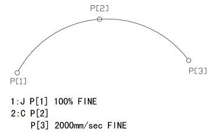

4.2喷漆示教编程
4.2.1圆弧运动指令C
[知识准备]指令格式：C P[i]
C P[i+1] 2000mm/sec FINE
指令注释：控制TCP（工具中心点）以每秒2000毫米的进给速度沿圆弧轨迹从起始点经过中间点P[i]移动到目标位置P[i+1]，中间点和目标点在指令中一并给出。
程序说明如下：
C—— 圆弧运动指令
P[i]—— 圆弧运动的起始点
2000mm/sec—— 进给速度为2000/秒，由程序指令直接指定，单位可为mm/sec、cm/min、inch/min。通过区别起点和终点时的姿态，来控制被驱动的工具的姿态。
图4-7 圆弧定位
图4-7中由P[1]点开始沿着过P[2]点的圆弧以2000mm/sec的速度运动至P[3]点。
视频 4-1 C指令运动